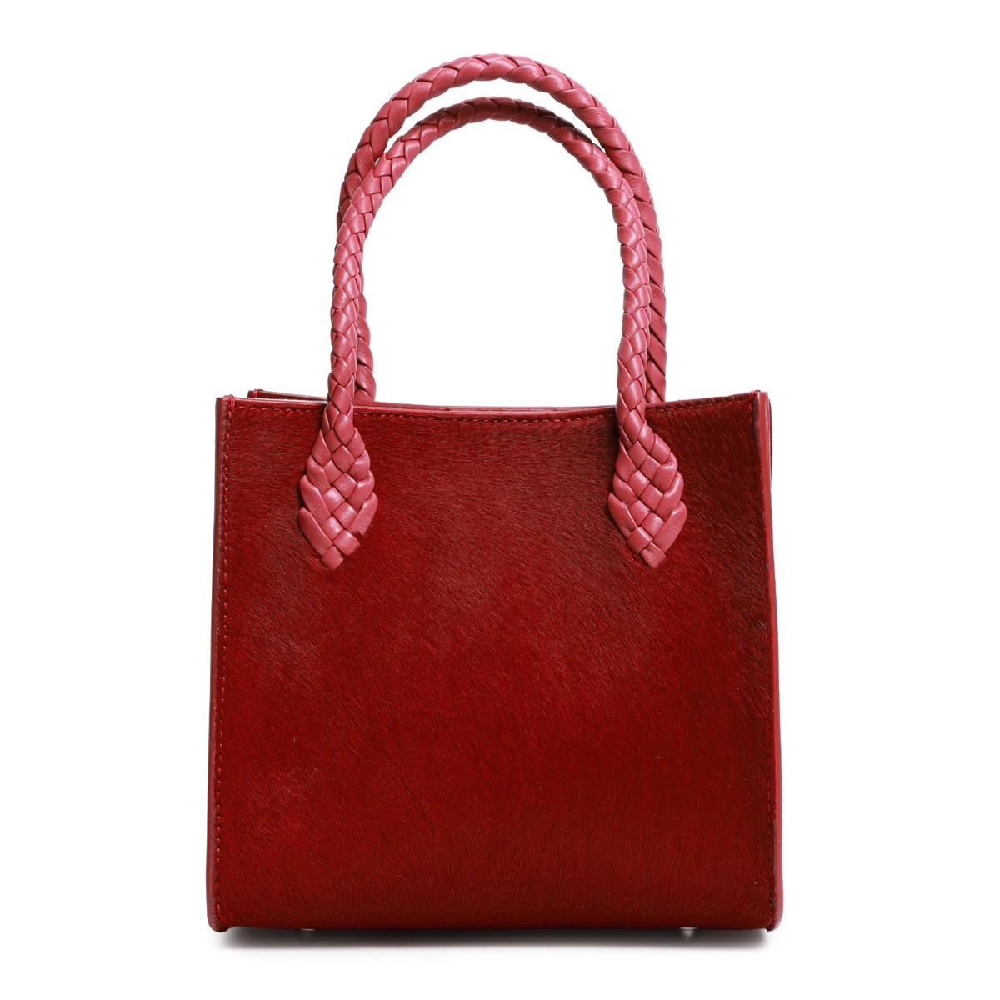

A proof for Jennifer Tattanelli
Il filo rosso
Florence in November is stone, ochre and grey. The only real colour is a red bag, and a little girl follows it all morning through the Oltrarno.

Florence in November is stone, ochre and grey. The only real colour is a red bag, and a little girl follows it all morning through the Oltrarno.
I started from your packshot and checked the bag image by image: the short red calf hair, the square body, the pink piping, the braided handles and their leaf-shaped tabs.


The lungarno, a fruit stall in the square, the steps of a church, a leather workshop. The same mother and daughter, real moments, the bag always in the light. The last image closes the circle: the child's hand makes the same gesture as her mother's on the braided handle.


Here is my presentation, with the worlds I have built for other brands.
matteopalumboph-ctrl.github.io/mplureThe same care for the other pieces and for each season, between Florence, Palm Beach and the Hamptons, with images and, when needed, a short film. No shoot to organise.
The images are built with artificial intelligence tools from your packshot, under my creative direction and with my final retouching, and delivered in high resolution. People and places are fictional. Non-commercial proof, prepared only for Jennifer Tattanelli.